The Booha Adventure
一匹の 小さなおばけの 中に、英語の 学校が まるごと 入っています。
A whole English school living inside one small ghost. This page is a guided tour of what's actually in there, built from real screens, not a highlight reel.
Everything below is real, straight from the app: the maze that reveals one week at a time, the worlds beyond it, and a few of the wanderers who turn up along the way. Most of the thirty-six are still left for a student to actually find.
下にあるものは 全て 本物です。迷路、その 先の 世界、そして 何人かの 旅人たち。ほとんどは まだ 見つかっていません。
ハブ、先週・今週・来週
Every visit starts here: a short Daily Check ritual, then a look at only three weeks of the school year at a time, so nobody has to stare down fifty weeks of content at once.
毎回ここから 始まります。デイリーチェックの 後、三週間分だけが 見えています。
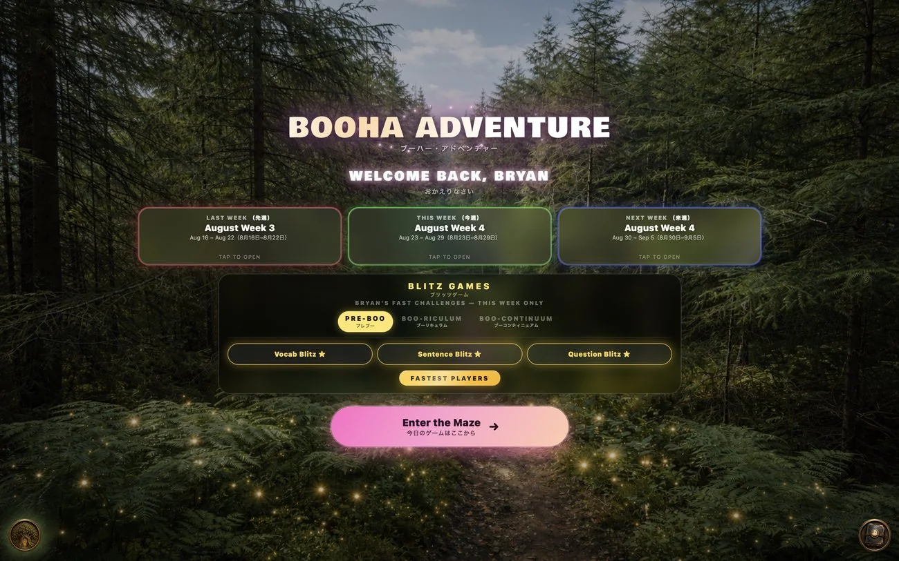
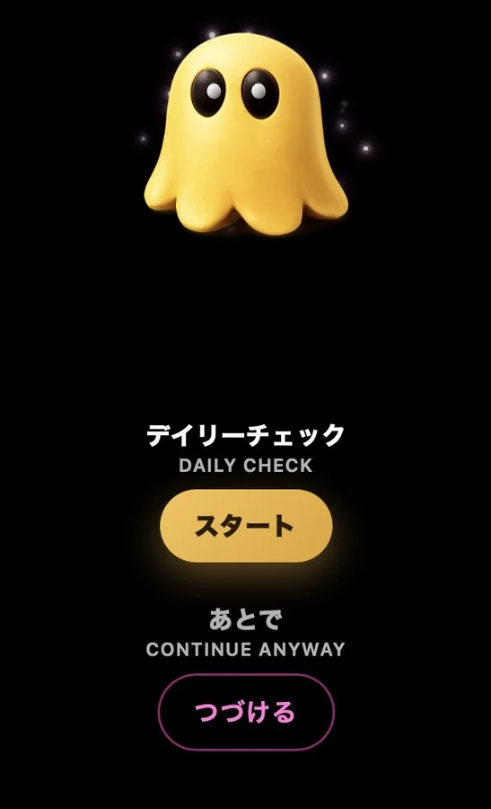
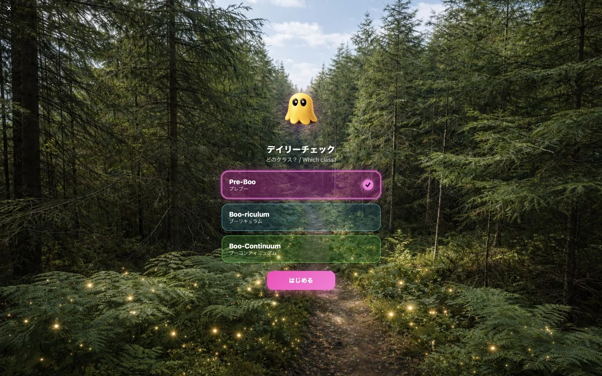
迷路、週ごとに 一本の 道
The Maze is a separate weekly route, not a reward for clearing Blitz. One path at a time is available across the school-year map, so you can see where the adventure goes next.
迷路はブリッツとは 別の、週ごとのルートです。一年分の 地図に、ひとつずつ 道が 見えてきます。
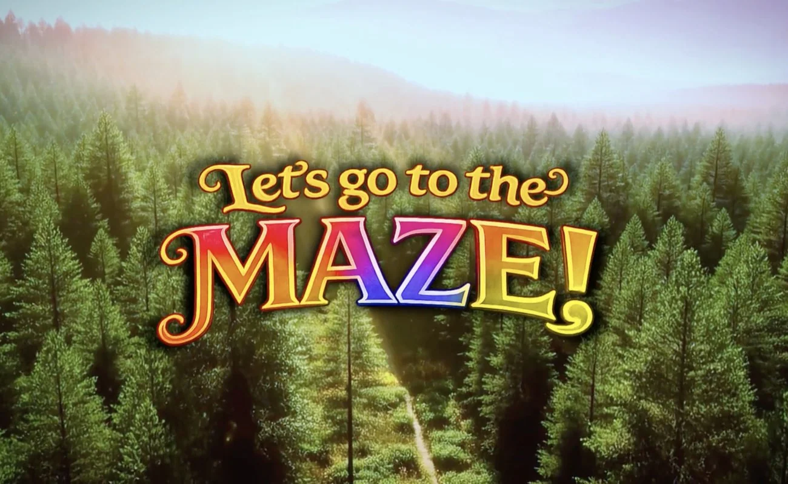
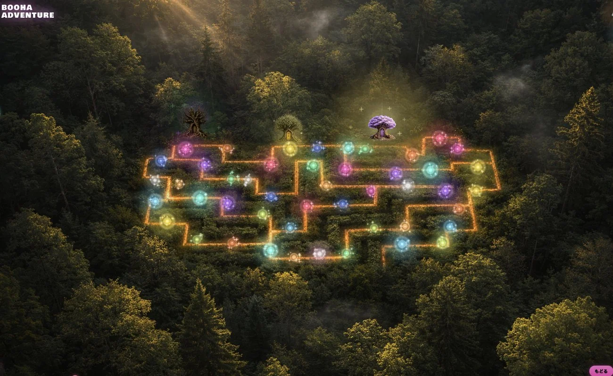
カラスキ、忘れられたものが 行く 世界
Step off the maze into a room by room world under a shifting day and night sky. Complete a maze game and wanderers start turning up, some just passing through, some waiting to be found for the very first time.
迷路のゲームをクリアすると、昼と 夜が 入れ替わる 世界に 旅人が 現れます。
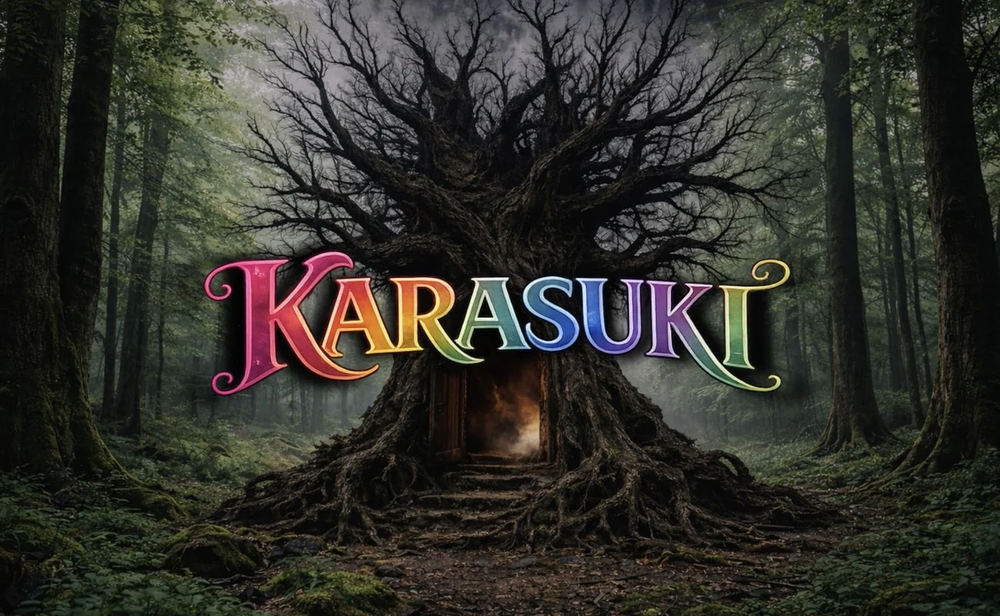
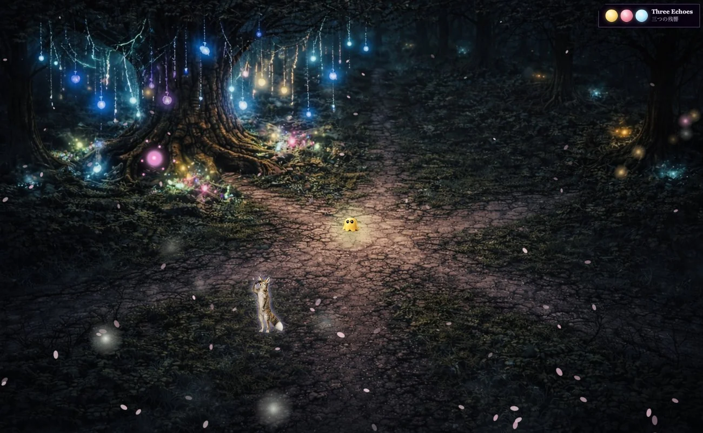
カラスキにも、独自の 仲間がいます
Wander long enough and something might join you on the path. Each one has its own name, its own habits, and its own reason for showing up.
十分に 歩くと、誰かが 道で 合流するかもしれません。
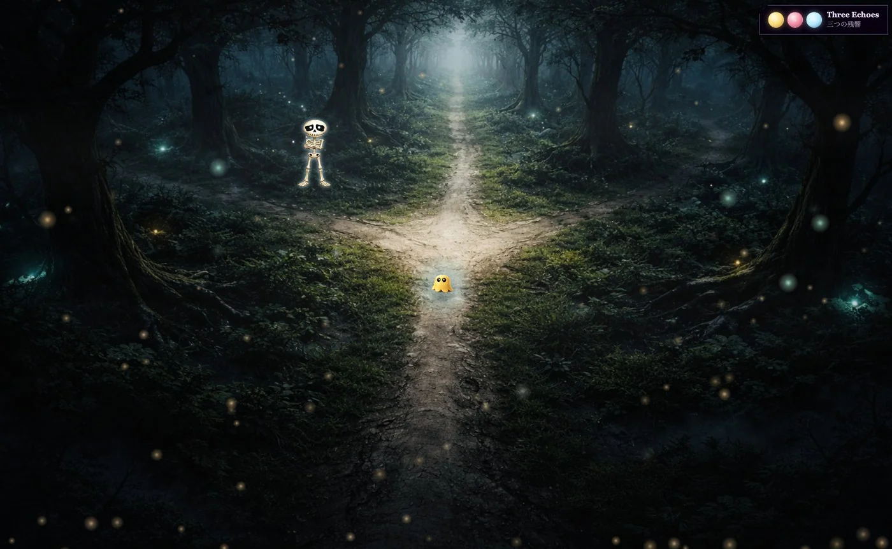
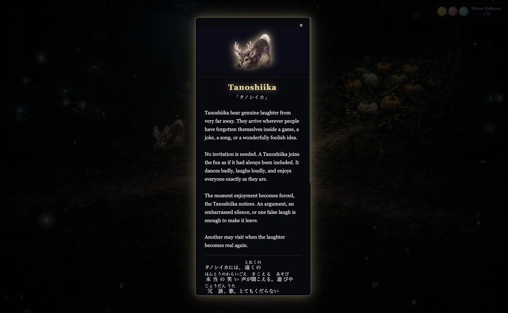
うつろば、六人の 漂流者と 記憶
Each of the six drifters is stuck between memories, and each holds one story told entirely in English: read it, solve it, give it back. Utsuroba has three tiers for experiencing those memories: Starter Memory, Case Memory, and Deep Memory. To find them, you’ll need to explore.
それぞれが 記憶の 途中で 止まっています。記憶を 体験するための 三つの レベルがあり、見つけるには 世界を 探索しなければなりません。
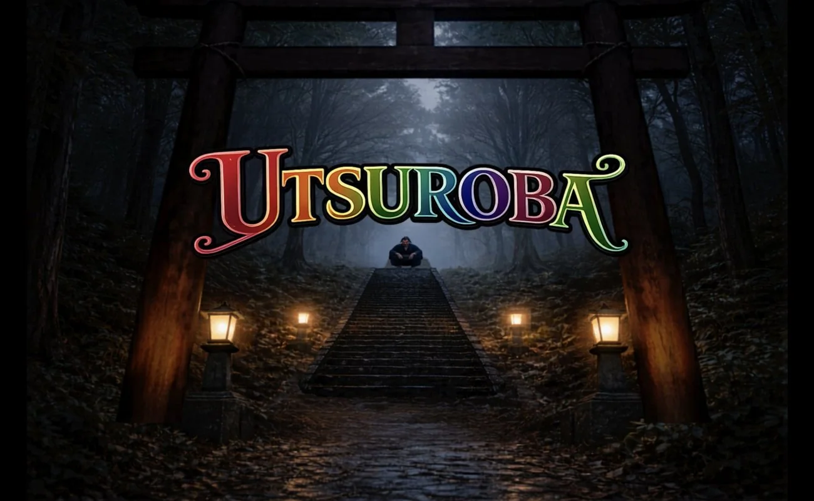
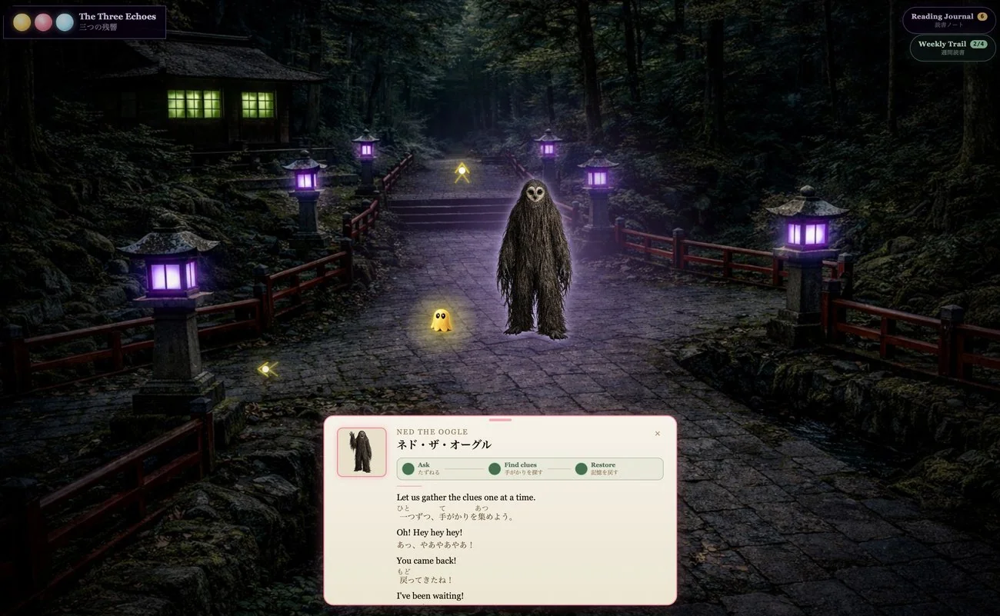
むえんば、緊張感のある 不気味なエリア
Muenba is a separate spooky area with fifteen fog-filled rooms and something hiding in each one. It is built for tension and careful movement, with the same three reading tiers too: Starter Memory, Case Memory, and Deep Memory.
むえんばは、霧に 包まれた 15の 部屋がある、緊張感に 満ちた 別の 不気味なエリアです。ここにも Starter Memory、Case Memory、Deep Memoryの 三つの 読み 方があります。
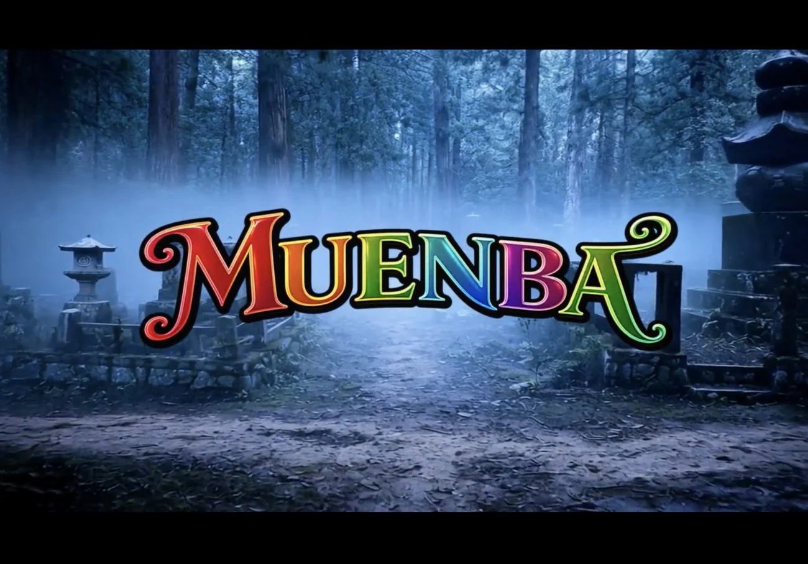
グリマーグレン、夢が 行きつく 場所
Grimmerglen is where daydreams gather and pile up. Meet Marietta, explore a pastel garden, and help recover the memories hidden inside everyday objects through short English typing challenges. Three reading tiers move from guided support toward remembering on your own.
グリマーグレンは、夢が 集まり、積み 重なる 場所です。マリエッタに 会い、パステルカラーの 庭を 探索しながら、身近なものに 残された 記憶を、短い 英語のタイピングで 取り 戻します。ヒントのある 段階から、自分で 思い 出す 段階へ 進みます。
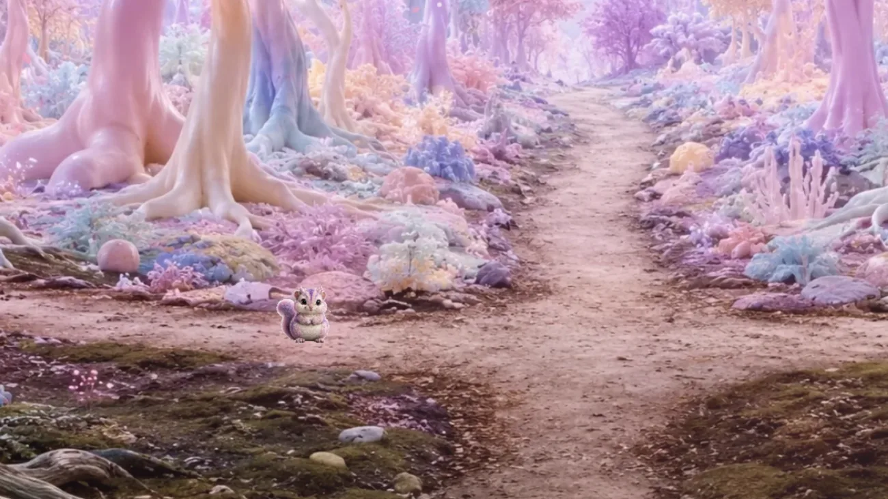
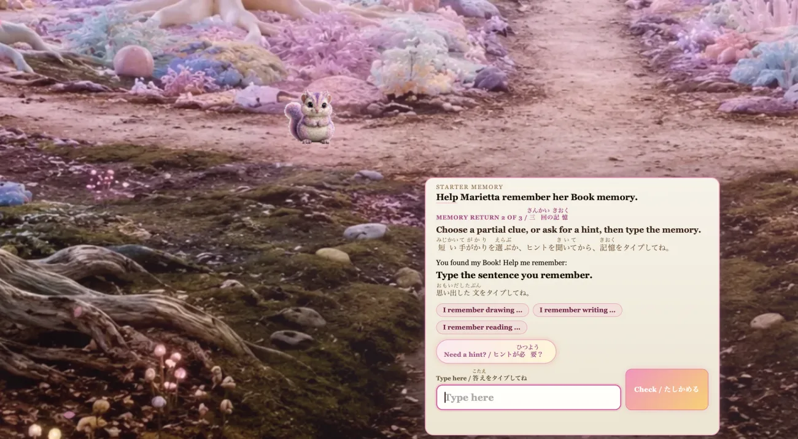
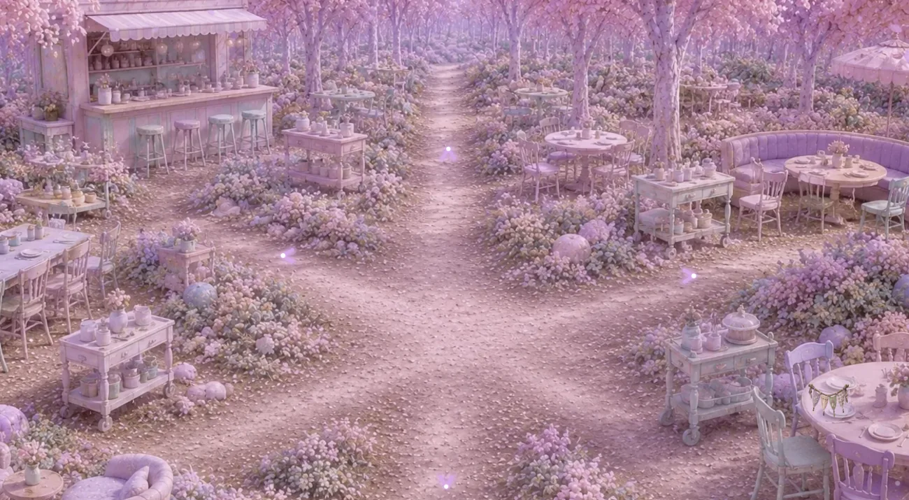
見つけられるのを 待つ 旅する 仲間
Wanderers turn up when you complete a maze game. Some turn up often, and some take weeks. Every collection section starts out with thirty-six to find. The list grows, and it sits right alongside the bonus arcade games you can unlock.
迷路のゲームをクリアすると、旅人が 現れます。何度も 現れる 旅人もいれば、見つかるまで 何週間もかかる 旅人もいます。コレクションのページは、最初は36体を 見つけるところから 始まり、リストは 増えていきます。解放できるボーナスゲームも、そのすぐ 隣に 並びます。
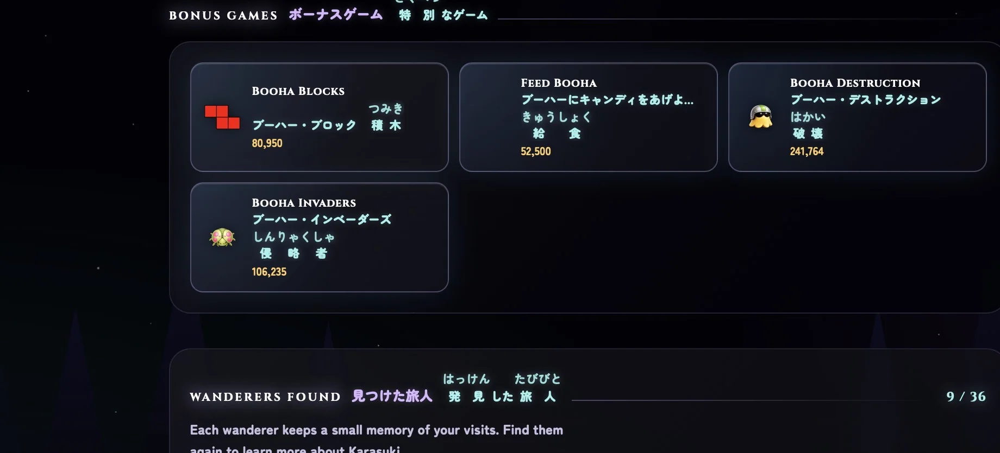